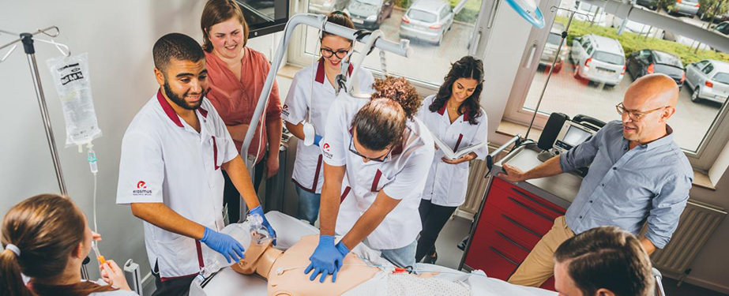
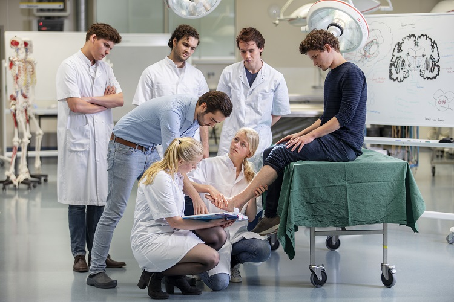
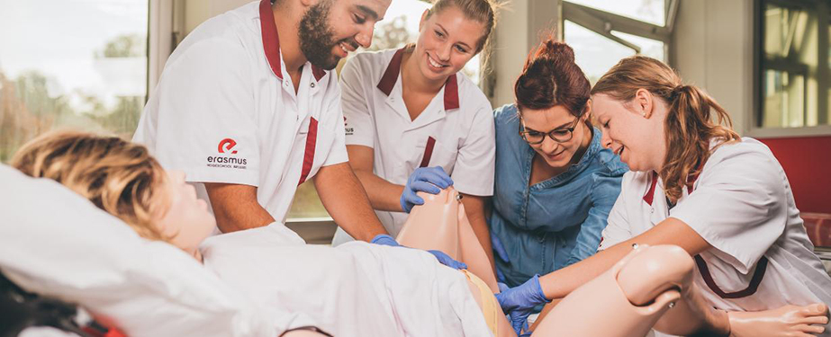
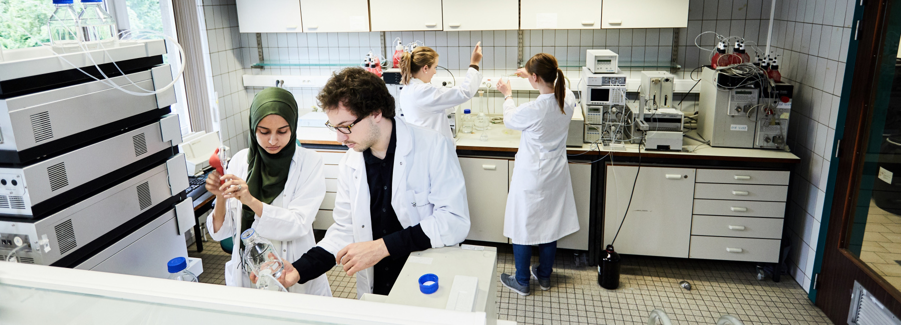

Verpleegkunde
Geneeskunde
Vroedkunde
Revalidatiewetenschappen en kinesitherapie
Voedings- en Dieetkunde

Farmacie
Biomedische Labratoriumtechnologie
Psychologie
Sociale Agogiek


De InterProfessionele Onderwijs (IPO) werkgroep van de Universitaire Associatie Brussel betreft een samenwerkingsverband tussen verschillende zorgopleidingen van de Vrije Universiteit Brussel en de Erasmushogeschool. De doelstelling van de werkgroep is het samenbrengen van vertegenwoordigers van opleidingen met studenten (toekomstige) zorgverleners om IPO in de respectievelijke curricula in te bouwen. In IPO wordt er met, van en over elkaar geleerd zodat studenten zorgverleners vanaf de start van hun opleiding leren interprofessioneel samen te werken. Op die manier wordt de samenwerking op de werkvloer gestimuleerd, hetgeen bijdraagt tot de kwaliteit van zorg.